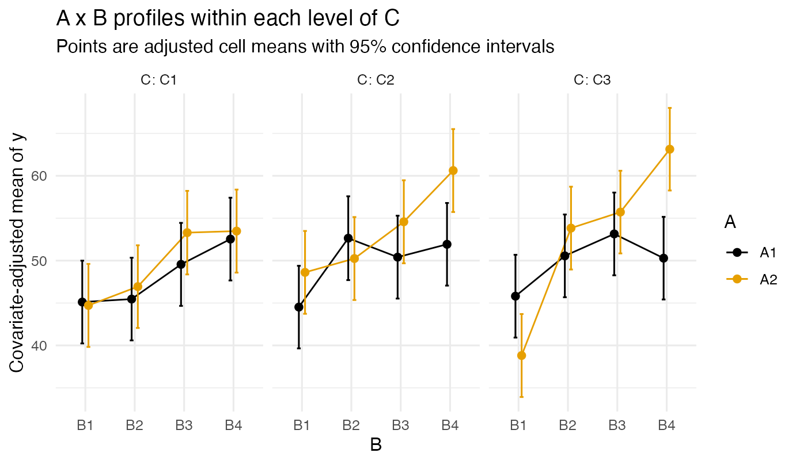

Power for Factorial ANCOVA: A 2 x 4 x 3 Design Worked in Full
Ken Kelley
July 2026
Source:vignettes/ancova_2x4x3_power.Rmd
ancova_2x4x3_power.RmdThis vignette plans, simulates, and analyzes a three-factor analysis of covariance from start to finish, in the spirit of Chapter 9 of Maxwell, Delaney, and Kelley (2027): a 2 x 4 x 3 between-subjects design with two covariates measured at baseline. The population is written down as an explicit vector of 24 cell means with homogeneous variances, power is planned effect by effect under an ANOVA and under ANCOVA with covariates of two strengths, hypothetical data are generated and analyzed with Type III sums of squares, the interactions are plotted the way we recommend plotting them, and the analysis ends with two focused complex comparisons.
1. The Design and the Population
Factor A has 2 levels, factor B has 4, factor C has 3. The planning targets, stated as Cohen’s f on the unadjusted metric: a weak main effect of A (f = .10), a stronger main effect of the three-level factor C (f = .25), and the strongest main effect on the four-level factor B (f = .40). The two-way interactions exist (each f = .10), and the three-way interaction exists as well (f = .15) and is planned for explicitly. The values .10, .25, and .40 are Cohen’s (1988) reference points, used here only to fix a concrete design; a set of hypothesized means, not an off-the-shelf benchmark, is what a real plan rests on. The within-cell standard deviation is 10 and the grand mean 50, so every effect is also interpretable in raw units.
The population means are built constructively from unit-scaled (root-mean-square one) patterns, so each component contributes exactly its target f:
sigma <- 10
mu0 <- 50
f_target <- c(A = .10, B = .40, C = .25,
AB = .10, AC = .10, BC = .10, ABC = .15)
# Unit-RMS, zero-mean patterns for each factor.
pA <- c(-1, 1) # RMS 1
pB <- c(-3, -1, 1, 3) / sqrt(5) # RMS 1
pC <- c(-1, 0, 1) / sqrt(2/3) # RMS 1
cells <- expand.grid(A = 1:2, B = 1:4, C = 1:3)
mu <- with(cells, mu0 + sigma * (
f_target["A"] * pA[A] +
f_target["B"] * pB[B] +
f_target["C"] * pC[C] +
f_target["AB"] * pA[A] * pB[B] +
f_target["AC"] * pA[A] * pC[C] +
f_target["BC"] * pB[B] * pC[C] +
f_target["ABC"] * pA[A] * pB[B] * pC[C]))
mu <- as.numeric(mu)
round(matrix(mu, nrow = 2,
dimnames = list(paste0("A", 1:2),
paste0(rep(paste0("B", 1:4), 3), ":",
rep(paste0("C", 1:3), each = 4)))), 1)
#> B1:C1 B2:C1 B3:C1 B4:C1 B1:C2 B2:C2 B3:C2 B4:C2 B1:C3 B2:C3 B3:C3 B4:C3
#> A1 42.3 45.5 48.8 52.0 45.0 47.7 50.3 53.0 47.6 49.8 51.9 54.0
#> A2 44.1 45.8 47.6 49.3 44.3 48.8 53.2 57.7 44.5 51.7 58.9 66.1Because the patterns are centered and mutually orthogonal in a balanced design, the realized f of every effect can be read back off the means vector, confirming the construction (this is also how you would compute f from any hypothesized means in practice):
f_from_means <- function(mu, cells, which) {
dat <- cbind(cells, mu = mu)
# Marginal (or interaction) deviations by sweeping out lower-order terms.
full <- aov(mu ~ factor(A) * factor(B) * factor(C), data = dat)
ss <- summary(full)[[1]][["Sum Sq"]]
names(ss) <- trimws(rownames(summary(full)[[1]]))
sqrt(ss[which] / length(mu)) / sigma
}
round(sapply(c("factor(A)", "factor(B)", "factor(C)",
"factor(A):factor(B)", "factor(A):factor(C)",
"factor(B):factor(C)",
"factor(A):factor(B):factor(C)"),
function(w) f_from_means(mu, cells, w)), 3)
#> factor(A).factor(A)
#> 0.10
#> factor(B).factor(B)
#> 0.40
#> factor(C).factor(C)
#> 0.25
#> factor(A):factor(B).factor(A):factor(B)
#> 0.10
#> factor(A):factor(C).factor(A):factor(C)
#> 0.10
#> factor(B):factor(C).factor(B):factor(C)
#> 0.10
#> factor(A):factor(B):factor(C).factor(A):factor(B):factor(C)
#> 0.15Every effect lands on its target.
2. Power, Three Ways: ANOVA, and ANCOVA at Two Covariate Strengths
The two baseline covariates carry a joint within-cell squared
multiple correlation with the outcome of either
= .10 (weakly prognostic covariates) or
= .25. Covariates do two things to the power calculation: the error
variance shrinks by 1 -
(so the operative effect size grows to f / sqrt(1 -
)),
and two error degrees of freedom are spent.
ss_power_factorial_ancova() does the accounting; with
covariate_R2 = 0, n_covariates = 0 it reduces to the plain
ANOVA planner ss_power_factorial_anova().
Per-cell sample sizes for power .80, for every named effect:
effects <- list(A = 1, B = 2, C = 3,
AB = c(1, 2), AC = c(1, 3), BC = c(2, 3),
ABC = c(1, 2, 3))
plan <- function(R2, q) {
sapply(names(effects), function(e)
ss_power_factorial_ancova(c(2, 4, 3), effects[[e]], f = f_target[e],
covariate_R2 = R2, n_covariates = q,
desired_power = .80)$value[1])
}
tab <- cbind(anova = plan(0, 0),
ancova_R2_.10 = plan(.10, 2),
ancova_R2_.25 = plan(.25, 2))
tab
#> anova ancova_R2_.10 ancova_R2_.25
#> A 33 30 25
#> B 4 3 3
#> C 7 6 5
#> AB 46 42 35
#> AC 41 37 31
#> BC 58 52 43
#> ABC 26 23 20Three lessons, the same ones Chapter 9 teaches. First, the design’s sample size is set by its smallest important effect: the f = .10 interactions set the requirement, the most expensive being B x C with its 6 numerator degrees of freedom, not the main effect of B (which needs only a handful per cell). Second, covariates buy real sample size: even at = .10 the requirement drops by about 10 percent, and at .25 by about a quarter, essentially for free in a randomized design with baseline measurement. Third, the three-way interaction is not an afterthought: at f = .15 its requirement sits between the main effects of A and C because its numerator degrees of freedom (6) make it expensive.
The total N implied by the binding effect (the largest row of each column) is what the study must recruit if every named effect matters:
3. Hypothetical Data
We generate data at 12 per cell (N = 288) with two baseline covariates jointly carrying = .25 within cells (each contributes equally and they are uncorrelated), and the residual scaled so the total within-cell standard deviation stays at 10:
set.seed(113)
n_cell <- 12
dat <- cells[rep(seq_len(24), each = n_cell), ]
dat$A <- factor(paste0("A", dat$A))
dat$B <- factor(paste0("B", dat$B))
dat$C <- factor(paste0("C", dat$C))
dat$mu <- rep(mu, each = n_cell)
b <- sqrt(.25 * sigma^2 / 2) # each covariate's slope: R2 = .25 total
dat$x1 <- rnorm(nrow(dat))
dat$x2 <- rnorm(nrow(dat))
dat$y <- dat$mu + b * dat$x1 + b * dat$x2 +
rnorm(nrow(dat), 0, sqrt(sigma^2 * (1 - .25)))4. Type III Analysis
Per Maxwell, Delaney, and Kelley (2027), the factorial ANCOVA is tested with Type III sums of squares, which in their model comparison framing compare the full model against the model with each term deleted, holding all others. Type III requires sum-to-zero contrasts (requires the car package):
op <- options(contrasts = c("contr.sum", "contr.poly"))
fit <- lm(y ~ A * B * C + x1 + x2, data = dat)
print_anova(car::Anova(fit, type = 3))
#> Anova Table (Type III tests)
#>
#> Response: y
#>
#> Sum Sq Df F value Pr(>F)
#> (Intercept) 732676.3707 1 9993.2167791 < 0.0001
#> A 502.1721 1 6.8492930 0.0094
#> B 4566.8889 3 20.7631059 < 0.0001
#> C 455.0986 2 3.1036207 0.0465
#> x1 3591.3759 1 48.9839704 < 0.0001
#> x2 3179.0963 1 43.3607525 < 0.0001
#> A:B 749.6121 3 3.4080695 0.0182
#> A:C 60.1807 2 0.4104123 0.6638
#> B:C 581.8196 6 1.3226053 0.2472
#> A:B:C 856.1272 6 1.9461673 0.0738
#> Residuals 19209.1509 262 NA <NA>
options(op)(print_anova() is DMAR’s display helper: fixed-decimal
p-values, no scientific notation.) In a balanced design like
this one, Types I, II, and III coincide for the factors; the habit of
Type III matters the day the design becomes unbalanced.
5. Plotting the Interactions Well
An interaction plot should show the cell means with their uncertainty, place the factor with the most levels on the horizontal axis, use color for the factor whose profiles are compared, and facet the third factor. Covariate-adjusted means (the means the ANCOVA actually tests, here at the covariate means) come from the fitted model:
grid <- expand.grid(A = levels(dat$A), B = levels(dat$B), C = levels(dat$C),
x1 = 0, x2 = 0)
pr <- predict(fit, newdata = grid, se.fit = TRUE)
grid$fit <- pr$fit
grid$lo <- pr$fit - qt(.975, df.residual(fit)) * pr$se.fit
grid$hi <- pr$fit + qt(.975, df.residual(fit)) * pr$se.fit
library(ggplot2)
pos <- position_dodge(width = 0.25)
ggplot(grid, aes(x = B, y = fit, group = A, color = A)) +
geom_line(position = pos, linewidth = 0.5) +
geom_errorbar(aes(ymin = lo, ymax = hi), width = 0.15, position = pos) +
geom_point(position = pos, size = 2) +
facet_wrap(~ C, labeller = label_both) +
scale_color_manual(values = unname(grDevices::palette.colors(2))) +
labs(y = "Covariate-adjusted mean of y",
title = "A x B profiles within each level of C",
subtitle = "Points are adjusted cell means with 95% confidence intervals") +
theme_minimal(base_size = 12)
Read the plot before any table: the B profiles climb steeply (the large main effect), the two A lines separate modestly and not identically across panels (the small A effect and the A x B and three-way wrinkles), and the panels shift level (the C effect).
6. Focused Follow-up Comparisons
Omnibus tests locate nothing. Following the model comparison perspective, the questions worth asking are focused contrasts. We use the cell-means parameterization so any comparison among the 24 adjusted cell means is a linear combination with an exact standard error:
dat$cell <- interaction(dat$A, dat$B, dat$C)
fit_cm <- lm(y ~ 0 + cell + x1 + x2, data = dat)
# The 24 cells of coef(fit_cm) run A fastest, then B, then C, which is the
# order expand.grid() produces and the order contrast_adjusted() expects.
cell_grid <- expand.grid(A = 1:2, B = 1:4, C = 1:3)contrast_adjusted() does the linear-combination
arithmetic: given the fitted model and a weight for each cell, it
returns the contrast of covariate-adjusted cell means, its confidence
interval on the residual degrees of freedom, and the accompanying
statistic and -value, all at full precision through the
dmar_tbl display layer.
Comparison 1. The complex comparison on the four-level factor B with weights (1/3, 1/3, 1/3, -1): does the average of the first three B levels differ from the last level, marginally over A and C?
w_B <- c(1/3, 1/3, 1/3, -1)
L1 <- w_B[cell_grid$B] / (2 * 3) # spread over the 2 x 3 cells of A x C
contrast_adjusted(fit_cm, contrast = L1)| term | value |
|---|---|
| contrast | -6.22 |
| lower_limit | -8.52 |
| upper_limit | -3.92 |
| t | -5.32 |
| p | < 0.0001 |
Confidence level: 95%
Comparison 2. The same B comparison, but evaluated within the average of the first two levels of C (a comparison of theoretical interest when, say, C3 is a control condition):
L2 <- ifelse(cell_grid$C %in% c(1, 2), w_B[cell_grid$B] / (2 * 2), 0)
contrast_adjusted(fit_cm, contrast = L2)| term | value |
|---|---|
| contrast | -5.8 |
| lower_limit | -8.61 |
| upper_limit | -2.99 |
| t | -4.06 |
| p | < 0.0001 |
Confidence level: 95%
Both comparisons are large and negative, as the population means
imply (B4 sits far above the average of B1 through B3 on the climbing
profile). For comparisons chosen after seeing the data, replace
the per-comparison critical value with the Scheffé critical value for
the 24-cell space, available as cv_scheffe(); planned
comparisons like these two use the per-comparison t shown.
7. Reading List
Maxwell, S. E., Delaney, H. D., & Kelley, K. (2027). Designing experiments and analyzing data: A model comparison perspective (4th ed.). Routledge. Chapter 9 (designs with covariates) for the ANCOVA logic; the contrast machinery is Chapters 4 through 6.
Lai, K., & Kelley, K. (2012). Accuracy in parameter estimation
for ANCOVA and ANOVA contrasts: Sample size planning via narrow
confidence intervals. British Journal of Mathematical and
Statistical Psychology, 65, 350–370. DMAR’s
ci_c_ancova() and ss_aipe_sc_ancova()
implement the precision (accuracy in parameter estimation) counterpart
to the power planning shown here, sizing a study so a covariate-adjusted
contrast is estimated with a confidence interval no wider than a
target.
Cohen, J. (1988). Statistical power analysis for the behavioral sciences (2nd ed.). Erlbaum.